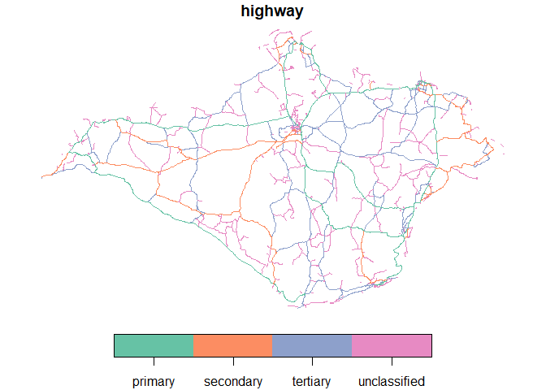

The goal of osmextractr is to make it easier for R users to access freely available, community created geographic data, in the form of OpenSteetMap data extracted by providers such as Geofabrik GmbH.
Why osmextractr?
osmdata provides an R interface to the Overpass API, which is ideal for downloading small OSM datasets. However, the API is rate limited, making it hard to download large datasets. As a case study, let’s try to download all cycleways in England:
library(osmdata) cycleways_england = opq("England") %>% add_osm_feature(key = "highway", value = "cycleway") %>% osmdata_sf() # Error in check_for_error(doc) : General overpass server error; returned: # The data included in this document is from www.openstreetmap.org. The data is made available under ODbL. runtime error: Query timed out in "query" at line 4 after 26 seconds.
The query hanged with an error message after around 10 seconds. The same query can be made with osmextractr as follows, which reads-in almost 100k linestrings in less than 10 seconds (after the data has been downloaded in the compressed .pbf format and converted to the open standard .gpkg format, not evaluated):
library(osmextractr) #> Data (c) OpenStreetMap contributors, ODbL 1.0. https://www.openstreetmap.org/copyright #> Geofabrik data are taken from https://download.geofabrik.de/
cycleways_england = osmext_get( "England", osmext_verbose = TRUE, query = "SELECT * FROM 'lines' WHERE highway = 'cycleway'" ) plot(sf::st_geometry(cycleways_england))

The package is designed to complement osmdata which has advantages over osmextractr for small datasets: osmdata is likely to be quicker for datasets less than ~10 MB, provides up-to-date data and has an intuitive interface. osmdata can provide data in a range of formats, while osmextractr only returns sf objects. On the other hand, osmextractr provides a fast way to download large OSM datasets in the highly compressed pbf format and read them in via the fast C library GDAL and the R package sf.
Installation
You can install the development version from GitHub with:
# install.packages("devtools") devtools::install_github("ITSLeeds/osmextractr")
Usage
Give osmextractr the name of a geofabrik zone and it will download and import it. By default it imports the ‘lines’ layer, but any layer can be read-in. Behind the scenes, the function read_pbf(), a wrapper around sf::st_read() is used with configuration options to import additional columns from the .pbf files not imported by default, including maxspeed, lanes and oneway (the attributes to include can be set with attributes argument):
The leitmotif of package is to help the users to read and download extracts of OpenStreetMap data stored by several providers, such as Geofabrik or bbbike. The provider’s data are stored using sf objects that summarize the most important characteristics of each geographic zone, such as the name and the url of the pbf file.
library(sf) #> Linking to GEOS 3.8.0, GDAL 3.0.4, PROJ 7.0.0 osmextractr::geofabrik_zones[, c(2, 8)] #> Simple feature collection with 430 features and 2 fields #> geometry type: MULTIPOLYGON #> dimension: XY #> bbox: xmin: -180 ymin: -90 xmax: 180 ymax: 85.04177 #> geographic CRS: WGS 84 #> First 10 features: #> name #> 1 Afghanistan #> 2 Africa #> 3 Albania #> 4 Alberta #> 5 Algeria #> 6 Alps #> 7 Alsace #> 8 Andorra #> 9 Angola #> 10 Antarctica #> pbf #> 1 https://download.geofabrik.de/asia/afghanistan-latest.osm.pbf #> 2 https://download.geofabrik.de/africa-latest.osm.pbf #> 3 https://download.geofabrik.de/europe/albania-latest.osm.pbf #> 4 https://download.geofabrik.de/north-america/canada/alberta-latest.osm.pbf #> 5 https://download.geofabrik.de/africa/algeria-latest.osm.pbf #> 6 https://download.geofabrik.de/europe/alps-latest.osm.pbf #> 7 https://download.geofabrik.de/europe/france/alsace-latest.osm.pbf #> 8 https://download.geofabrik.de/europe/andorra-latest.osm.pbf #> 9 https://download.geofabrik.de/africa/angola-latest.osm.pbf #> 10 https://download.geofabrik.de/antarctica-latest.osm.pbf #> geometry #> 1 MULTIPOLYGON (((62.47808 29... #> 2 MULTIPOLYGON (((11.60092 33... #> 3 MULTIPOLYGON (((19.37748 42... #> 4 MULTIPOLYGON (((-110.0051 4... #> 5 MULTIPOLYGON (((6.899245 37... #> 6 MULTIPOLYGON (((5.57178 48.... #> 7 MULTIPOLYGON (((8.236555 48... #> 8 MULTIPOLYGON (((1.516233 42... #> 9 MULTIPOLYGON (((20.72182 -1... #> 10 MULTIPOLYGON (((-180 -90, 1...
Load package
The packages is composed by 4 main functions:
-
osmext_match: Match the input zone with one of the files stored by the OSM providers -
osmext_download: Download the chosen file -
osmext_vectortranslate: Convert the pbf format into gpkg -
osmext_read: Read the gpkg file
The function osmext_get is a wrapper around all of them.
Test osmext_match
The simplest example:
osmext_match("Italy") #> $url #> [1] "https://download.geofabrik.de/europe/italy-latest.osm.pbf" #> #> $file_size #> [1] 1544340778 osmext_match("Isle of wight") #> $url #> [1] "https://download.geofabrik.de/europe/great-britain/england/isle-of-wight-latest.osm.pbf" #> #> $file_size #> [1] 6877468
There are several situations where it could be difficult to find the appropriate data source due to several small differences in the official names:
osmext_match("Korea") #> Error: String distance between best match and the input place is 3, while the maximum threshold distance is equal to 1. You should increase the max_string_dist parameter, look for a closer match in the chosen provider database or consider using a different match_by variable. osmext_match("Russia") #> Error: String distance between best match and the input place is 3, while the maximum threshold distance is equal to 1. You should increase the max_string_dist parameter, look for a closer match in the chosen provider database or consider using a different match_by variable.
For these reasons we implemented the possibility to look for the appropriate area according to the iso3166-1 alpha2 code:
osmext_match("KP", match_by = "iso3166_1_alpha2") #> $url #> [1] "https://download.geofabrik.de/asia/north-korea-latest.osm.pbf" #> #> $file_size #> [1] 33241783 osmext_match("RU", match_by = "iso3166_1_alpha2") #> $url #> [1] "https://download.geofabrik.de/russia-latest.osm.pbf" #> #> $file_size #> [1] 2820253009 osmext_match("US", match_by = "iso3166_1_alpha2") #> $url #> [1] "https://download.geofabrik.de/north-america/us-latest.osm.pbf" #> #> $file_size #> [1] 6982945396
The are a few cases where the iso3166-1 alpha2 codes can fail because there are no per-country extracts (e.g. Israel and Palestine)
osmext_match("PS", match_by = "iso3166_1_alpha2") #> Error: String distance between best match and the input place is 1, while the maximum threshold distance is equal to 0. You should increase the max_string_dist parameter, look for a closer match in the chosen provider database or consider using a different match_by variable. osmext_match("IL", match_by = "iso3166_1_alpha2") #> Error: String distance between best match and the input place is 1, while the maximum threshold distance is equal to 0. You should increase the max_string_dist parameter, look for a closer match in the chosen provider database or consider using a different match_by variable.
For this reason we also created a function that let you explore the matching variables according to a chosen pattern, for example:
osmext_check_pattern("London") #> [1] "Greater London" osmext_check_pattern("Russia") #> [1] "Russian Federation" osmext_check_pattern("Korea") #> [1] "North Korea" "South Korea" osmext_check_pattern("Yorkshire") #> [1] "East Yorkshire with Hull" "North Yorkshire" #> [3] "South Yorkshire" "West Yorkshire" osmext_check_pattern("US") #> [1] "US Midwest" "US Northeast" "US Pacific" #> [4] "US South" "US West" "Georgia (US State)" osmext_check_pattern("US", match_by = "iso3166_2") #> [1] "US-AL" "US-AK" "US-AZ" "US-AR" "US-CA" "US-CO" "US-CT" "US-DE" "US-DC" #> [10] "US-FL" "US-GA" "US-HI" "US-ID" "US-IL" "US-IN" "US-IA" "US-KS" "US-KY" #> [19] "US-LA" "US-ME" "US-MD" "US-MA" "US-MI" "US-MN" "US-MS" "US-MO" "US-MT" #> [28] "US-NE" "US-NV" "US-NH" "US-NJ" "US-NM" "US-NY" "US-NC" "US-ND" "US-OH" #> [37] "US-OK" "US-OR" "US-PA" "US-PR" "US-RI" "US-SC" "US-SD" "US-TN" "US-TX" #> [46] "US-UT" "US-VT" "US-VA" "US-WA" "US-WV" "US-WI" "US-WY" osmext_check_pattern("Palestine") #> [1] "Israel and Palestine" osmext_check_pattern("Israel", full_row = TRUE) #> Simple feature collection with 1 feature and 14 fields #> geometry type: MULTIPOLYGON #> dimension: XY #> bbox: xmin: 34.07929 ymin: 29.37711 xmax: 35.91531 ymax: 33.35091 #> geographic CRS: WGS 84 #> id name parent level iso3166_1_alpha2 #> 151 israel-and-palestine Israel and Palestine asia 2 PS IL #> iso3166_2 pbf_file_size #> 151 <NA> 82361911 #> pbf #> 151 https://download.geofabrik.de/asia/israel-and-palestine-latest.osm.pbf #> bz2 #> 151 https://download.geofabrik.de/asia/israel-and-palestine-latest.osm.bz2 #> shp #> 151 https://download.geofabrik.de/asia/israel-and-palestine-latest-free.shp.zip #> pbf.internal #> 151 https://osm-internal.download.geofabrik.de/asia/israel-and-palestine-latest-internal.osm.pbf #> history #> 151 https://osm-internal.download.geofabrik.de/asia/israel-and-palestine-internal.osh.pbf #> taginfo #> 151 https://taginfo.geofabrik.de/asia/israel-and-palestine/ #> updates #> 151 https://download.geofabrik.de/asia/israel-and-palestine-updates #> geometry #> 151 MULTIPOLYGON (((34.64563 32...
The input place can be also specified using an sfc_POINT object with arbitrary CRS as documented in the following example. If there are multiple matches, the function returns the smallest area (according to the level variable). I would ignore the CRS warning for the moment.
coords_milan = sf::st_point(c(1514924.21, 5034552.92)) # Duomo di Milano st_sfc_milan = sf::st_sfc(coords_milan, crs = 3003) osmext_match(st_sfc_milan) #> although coordinates are longitude/latitude, st_intersects assumes that they are planar #> $url #> [1] "https://download.geofabrik.de/europe/italy/nord-ovest-latest.osm.pbf" #> #> $file_size #> [1] 416306623
The input place can be also specified using a numeric vector of coordinates. In that case the CRS is assumed to be 4326:
osmext_match(c(9.1916, 45.4650)) # Duomo di Milano #> although coordinates are longitude/latitude, st_intersects assumes that they are planar #> $url #> [1] "https://download.geofabrik.de/europe/italy/nord-ovest-latest.osm.pbf" #> #> $file_size #> [1] 416306623 osmext_match(c(9.1916, 45.4650, 9.2020, 45.4781)) #> Error in osmext_match.numeric(c(9.1916, 45.465, 9.202, 45.4781)): You need to provide a pair of coordinates and you passed as input a vector of length 4 # osmext_match(c(9.1916, 45.4650), c(9.2020, 45.4781)) FIXME with suitable check and error
If there are several error matching the input place with one of the zone, you can also try increasing the maximum allowed string distance:
osmext_match("Isle Wight") #> Error: String distance between best match and the input place is 3, while the maximum threshold distance is equal to 1. You should increase the max_string_dist parameter, look for a closer match in the chosen provider database or consider using a different match_by variable. osmext_match("Isle Wight", max_string_dist = 3) #> $url #> [1] "https://download.geofabrik.de/europe/great-britain/england/isle-of-wight-latest.osm.pbf" #> #> $file_size #> [1] 6877468
Test osmext_download
The simplest example:
iow = osmext_match("Isle of Wight") osmext_download( file_url = iow$url, file_size = iow$file_size ) #> [1] "/mnt/57982e2a-2874-4246-a6fe-115c199bc6bd/data/osm/geofabrik_isle-of-wight-latest.osm.pbf"
If you want to download your data into a specific folder once, you can set the download directory:
Sys.setenv("OSMEXT_DOWNLOAD_DIRECTORY" = "/home/andrea/Downloads") osmext_download( file_url = iow$url, file_size = iow$file_size ) #> /home/andrea/Downloads/geofabrik_isle-of-wight-latest.osm.pbf
If you want to set a directory that will persist, you can set OSMEXT_DOWNLOAD_DIRECTORY=/path/for/osm/data in your .Renviron file, e.g. with:
usethis::edit_r_environ() # Add a line containing: OSMEXT_DOWNLOAD_DIRECTORY=/path/to/save/files
Importing OSM data
The function osmext_get() downloads (if not already downloaded) and reads-in data from OSM extract providers as an sf object:
(iow = osmext_get("Isle of Wight", stringsAsFactors = FALSE)) #> Reading layer `lines' from data source `/mnt/57982e2a-2874-4246-a6fe-115c199bc6bd/data/osm/geofabrik_isle-of-wight-latest.gpkg' using driver `GPKG' #> Simple feature collection with 44365 features and 9 fields #> geometry type: LINESTRING #> dimension: XY #> bbox: xmin: -5.401978 ymin: 43.35489 xmax: -0.175775 ymax: 50.89599 #> geographic CRS: WGS 84 #> Simple feature collection with 44365 features and 9 fields #> geometry type: LINESTRING #> dimension: XY #> bbox: xmin: -5.401978 ymin: 43.35489 xmax: -0.175775 ymax: 50.89599 #> geographic CRS: WGS 84 #> First 10 features: #> osm_id name highway waterway aerialway barrier man_made #> 1 413 Lane End residential <NA> <NA> <NA> <NA> #> 2 415 Foreland Road secondary <NA> <NA> <NA> <NA> #> 3 416 Steyne Road secondary <NA> <NA> <NA> <NA> #> 4 698 Carpenters Road secondary <NA> <NA> <NA> <NA> #> 5 701 Mill Road tertiary <NA> <NA> <NA> <NA> #> 6 705 Downsview Road residential <NA> <NA> <NA> <NA> #> 7 706 Lincoln Way residential <NA> <NA> <NA> <NA> #> 8 709 Paddock Drive residential <NA> <NA> <NA> <NA> #> 9 710 Forelands Field Road residential <NA> <NA> <NA> <NA> #> 10 713 Howgate Road residential <NA> <NA> <NA> <NA> #> z_order #> 1 3 #> 2 6 #> 3 6 #> 4 6 #> 5 4 #> 6 3 #> 7 3 #> 8 3 #> 9 3 #> 10 3 #> other_tags #> 1 "lanes"=>"2","lit"=>"yes","maxspeed"=>"30 mph","surface"=>"asphalt" #> 2 "lit"=>"yes","ref"=>"B3395","lanes"=>"2","surface"=>"asphalt","maxspeed"=>"30 mph","sidewalk"=>"both" #> 3 "lanes"=>"2","lit"=>"yes","maxspeed"=>"30 mph","ref"=>"B3395","surface"=>"asphalt" #> 4 "incline"=>"down","lanes"=>"2","lit"=>"yes","maxspeed"=>"30 mph","ref"=>"B3330","sidewalk"=>"left","surface"=>"asphalt" #> 5 "lanes"=>"2","lit"=>"no","maxspeed"=>"30 mph","surface"=>"asphalt" #> 6 <NA> #> 7 <NA> #> 8 <NA> #> 9 "designation"=>"public_footpath","prow_ref"=>"BB13" #> 10 "bicycle"=>"yes","foot"=>"yes","horse"=>"yes","maxspeed"=>"30 mph","oneway"=>"no","surface"=>"asphalt" #> geometry #> 1 LINESTRING (-1.083348 50.68... #> 2 LINESTRING (-1.083348 50.68... #> 3 LINESTRING (-1.089935 50.68... #> 4 LINESTRING (-1.115375 50.69... #> 5 LINESTRING (-1.094493 50.68... #> 6 LINESTRING (-1.083304 50.68... #> 7 LINESTRING (-1.086146 50.68... #> 8 LINESTRING (-1.074056 50.68... #> 9 LINESTRING (-1.076458 50.68... #> 10 LINESTRING (-1.087919 50.68... class(iow) #> [1] "sf" "data.frame" names(iow) # default variable names #> [1] "osm_id" "name" "highway" "waterway" "aerialway" #> [6] "barrier" "man_made" "z_order" "other_tags" "geometry"
Once imported, we can use all the functions for data frames in base R and other packages. We can also use functions from the sf package for spatial analysis and visualisation. Let’s plot all the major and minor roads, for example:
iow_major_roads = iow[iow$highway %in% c("primary", "secondary"), ] plot(iow_major_roads["highway"])

The same steps can be used to get other OSM datasets (note use of osmext_verbose = TRUE to show additional message, examples not run):
test_malta = osmext_get("Malta", osmext_verbose = TRUE) ncol(test_malta) test_andorra = osmext_get("Andorra", extra_attributes = "ref", osmext_verbose = TRUE) ncol(test_andorra)
Queries
Some files from providers such as geofabrik are large. You may therefore want to check the contents before importing them. To do this you can use an SQL query that is passed to GDAL via sf. To check the values stored in the highway column for our Isle of Wight example, for example, run the following command:
osmext_get( "Isle of Wight", query = "SELECT DISTINCT highway FROM \"lines\" " ) #> Reading layer `lines' from data source `/mnt/57982e2a-2874-4246-a6fe-115c199bc6bd/data/osm/geofabrik_isle-of-wight-latest.gpkg' using driver `GPKG' #> Warning: no simple feature geometries present: returning a data.frame or tbl_df #> highway #> 1 residential #> 2 secondary #> 3 tertiary #> 4 unclassified #> 5 primary #> 6 footway #> 7 service #> 8 <NA> #> 9 track #> 10 bridleway #> 11 steps #> 12 path #> 13 primary_link #> 14 cycleway #> 15 living_street #> 16 pedestrian #> 17 construction #> 18 secondary_link #> 19 tertiary_link #> 20 proposed
The values will vary. There are more types of highway in the Andorra dataset, for example:
osmext_get( "Andorra", query = "SELECT DISTINCT highway FROM \"lines\" " ) #> Reading layer `lines' from data source `/mnt/57982e2a-2874-4246-a6fe-115c199bc6bd/data/osm/geofabrik_andorra-latest.gpkg' using driver `GPKG' #> Warning: no simple feature geometries present: returning a data.frame or tbl_df #> highway #> 1 primary #> 2 <NA> #> 3 trunk #> 4 secondary_link #> 5 secondary #> 6 tertiary #> 7 residential #> 8 service #> 9 steps #> 10 unclassified #> 11 pedestrian #> 12 footway #> 13 track #> 14 living_street #> 15 path #> 16 bridleway #> 17 trunk_link #> 18 primary_link #> 19 cycleway #> 20 tertiary_link #> 21 raceway #> 22 road
The same query argument can be used to read-in only certain features, all primary roads in Andorra for example:
# and select only one of them: iow_primary = osmext_get( "Isle of Wight", extra_attributes = "ref", osmext_verbose = TRUE, query = "SELECT * FROM 'lines' WHERE highway IN ('primary')" ) #> The input place was matched with: Isle of Wight #> The chosen file was already detected in the download directory. Skip downloading. #> The corresponding gpkg file was already detected. Skip vectortranslate operations #> Reading layer `lines' from data source `/mnt/57982e2a-2874-4246-a6fe-115c199bc6bd/data/osm/geofabrik_isle-of-wight-latest.gpkg' using driver `GPKG' #> Simple feature collection with 548 features and 9 fields #> geometry type: LINESTRING #> dimension: XY #> bbox: xmin: -1.537223 ymin: 50.58314 xmax: -1.141969 ymax: 50.75952 #> geographic CRS: WGS 84 class(iow_primary) #> [1] "sf" "data.frame" plot(iow_primary$geometry)

This is substantially faster and less memory intensive than reading-in the whole dataset and filtering with R.
You can use GDAL’s SQL syntax to get the result you need. Let’s get all primary and secondary roads, for example:
iow_major_roads2 = osmext_get( "Isle of Wight", extra_attributes = "ref", osmext_verbose = TRUE, query = "SELECT * FROM 'lines' WHERE highway IN ('primary', 'secondary')" ) #> The input place was matched with: Isle of Wight #> The chosen file was already detected in the download directory. Skip downloading. #> The corresponding gpkg file was already detected. Skip vectortranslate operations #> Reading layer `lines' from data source `/mnt/57982e2a-2874-4246-a6fe-115c199bc6bd/data/osm/geofabrik_isle-of-wight-latest.gpkg' using driver `GPKG' #> Simple feature collection with 918 features and 9 fields #> geometry type: LINESTRING #> dimension: XY #> bbox: xmin: -1.565827 ymin: 50.58314 xmax: -1.083348 ymax: 50.76245 #> geographic CRS: WGS 84 plot(iow_major_roads2["highway"])

You can also use regex, as shown in the following command that gets roads that are likely to be walking and cycling friendly:
iow_active_travel = osmext_get( "Isle of Wight", extra_attributes = "ref", osmext_verbose = TRUE, query = "SELECT * FROM 'lines' WHERE highway IN ('cycleway', 'living_street')" ) #> The input place was matched with: Isle of Wight #> The chosen file was already detected in the download directory. Skip downloading. #> The corresponding gpkg file was already detected. Skip vectortranslate operations #> Reading layer `lines' from data source `/mnt/57982e2a-2874-4246-a6fe-115c199bc6bd/data/osm/geofabrik_isle-of-wight-latest.gpkg' using driver `GPKG' #> Simple feature collection with 143 features and 9 fields #> geometry type: LINESTRING #> dimension: XY #> bbox: xmin: -1.538843 ymin: 50.61815 xmax: -1.133171 ymax: 50.7592 #> geographic CRS: WGS 84 plot(iow_active_travel["highway"])

Next steps
We hope to make the user interface to the SQL syntax more user friendly. Any contributions to support this or any other improvements to the package are very welcome via our issue tracker.
Licence
We hope this package will provide easy access to OSM data for reproducible research in the public interest, adhering to the condition of the OdBL licence which states that
Any Derivative Database that You Publicly Use must be only under the terms of: - i. This License; - ii. A later version of this License similar in spirit to this